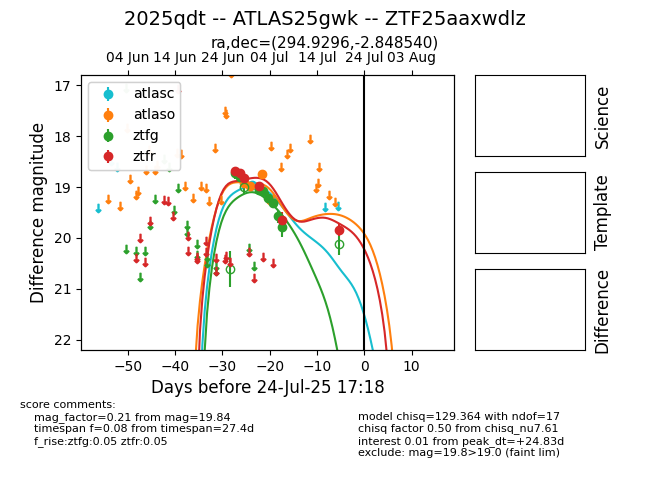

Target 2025qdt at 2025-07-24 17:18, see:
FINK: fink-portal.org/2025qdt
Lasair: lasair-ztf.lsst.ac.uk/objects/2025qdt
ALeRCE: alerce.online/object/2025qdt
TNS: wis-tns.org/object/2025qdt
YSE: ziggy.ucolick.org/yse/transient_detail/2025qdt
alt names
ZTF25aaxwdlz (ztf,fink)
2025qdt (tns,yse)
ATLAS25gwk (atlas)
coordinates:
equatorial (ra, dec) = (294.9296,-2.84854)
galactic (l, b) = (35.9213,-12.03654)
photometry
last atlasc=19.02, atlaso=18.75, ztfg=19.79, ztfr=19.84
2 atlasc, 3 atlaso, 8 ztfg, 6 ztfr detections
